Inicio
Studio Ghibli (スタジオジブリ) es un estudio japonés de animación, considerado por la crítica especializada y muchos cinéfilos como uno de los mejores estudios de animación del mundo en la actualidad.1
El estudio es conocido por sus largometrajes animados y también ha producido varios cortometrajes, comerciales de televisión y una película para televisión. Fue fundado el 15 de junio de 1985 por los directores Hayao Miyazaki e Isao Takahata y el productor Toshio Suzuki, después del éxito de la película de anime de Topcraft Nausicaä del Valle del Viento (1984). Studio Ghibli también ha colaborado con estudios de videojuegos en el desarrollo visual de varios videojuegos.
Seis de las películas de Studio Ghibli se encuentran entre las 10 películas de anime más taquilleras realizadas en Japón, siendo El Viaje de Chihiro (2001) la segunda más alta, recaudando más de 360 millones de dólares en todo el mundo. Muchos de sus trabajos han ganado el premio Animage Anime Grand Prix, y cuatro han ganado el Premio de la Academia Japonesa de Animación del Año. Cinco de las películas de Studio Ghibli han recibido nominaciones al Óscar. El Viaje de Chihiro ganó el Oso de Oro en 2002 y el Premio de la Academia a la Mejor Película de Animación en 2003. Totoro, un personaje de Mi vecino Totoro, es la mascota del estudio.
El 3 de agosto de 2014, Studio Ghibli detuvo temporalmente la producción tras el retiro de Miyazaki. En febrero de 2017, Toshio Suzuki anunció que Miyazaki había vuelto a salir de su retiro para dirigir un nuevo largometraje, ¿Cómo vives?, con Studio Ghibli.
Películas
Desde su fundación, Studio Ghibli ha producido un total de 22 películas, cada una con su propia historia y estilo visual. Entre ellas se encuentran clásicos como Mi Vecino Totoro, El Castillo en el Cielo, La Princesa Mononoke y muchas más. Sin embargo, la película más famosa del estudio es El Viaje de Chihiro, la cual ganó el premio a la Mejor Película de Animación en los Premios de la Academia en 2008.
| Película | Año | Póster |
|---|---|---|
| Nausicä del Valle del Viento | 1984 | 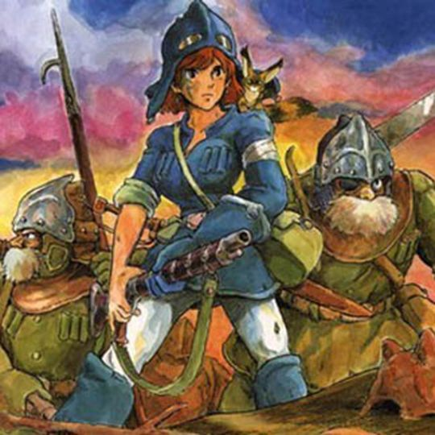 |
| El castillo en el cielo | 1986 | 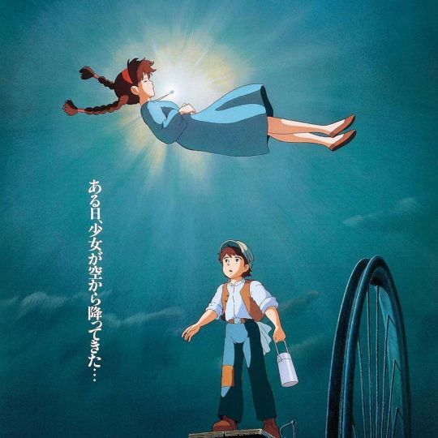 |
| La Tumba de las Luciérnagas | 1988 | 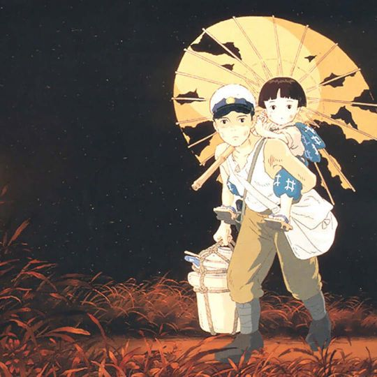 |
| Mi vecino Totoro | 1988 | 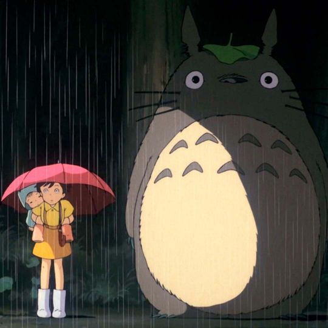 |
| Kiki Servicio de Entregas | 1989 | 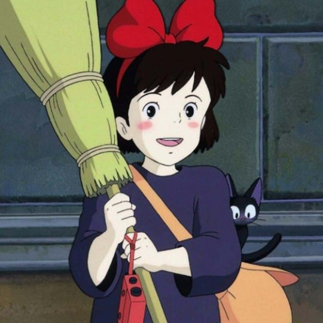 |
| Recuerdos del ayer | 1991 | 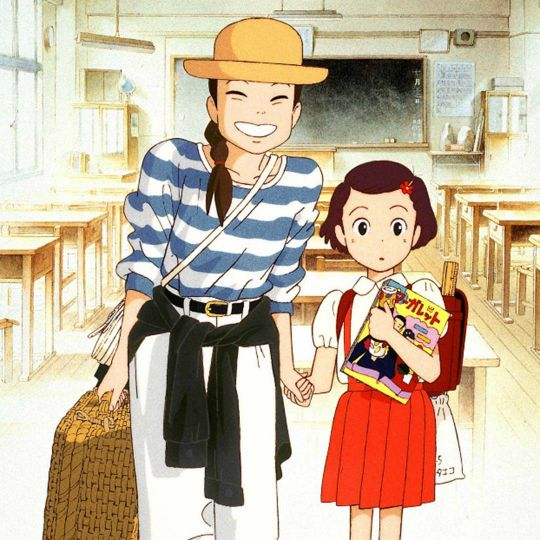 |
| Porco Rosso | 1992 | 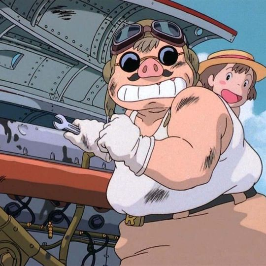 |
| Puedo escuchar el mar | 1993 | 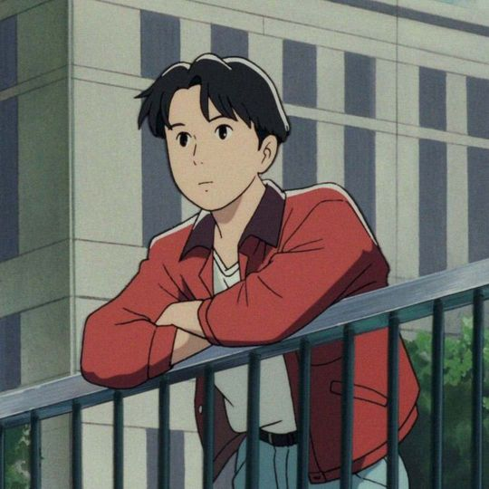 |
| Pompoko | 1994 | 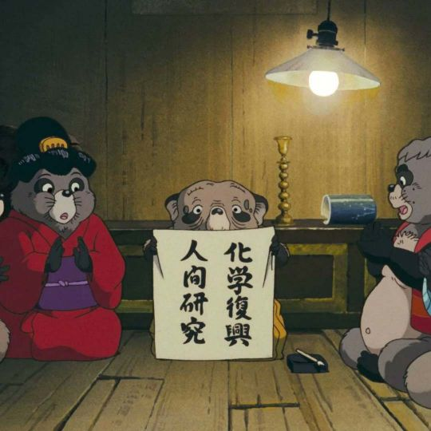 |
| Susurros del Corazón | 1995 | 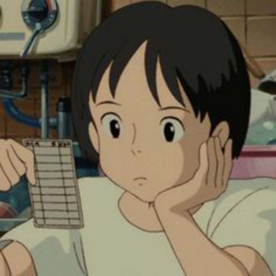 |
| La princesa Mononoke | 1997 | 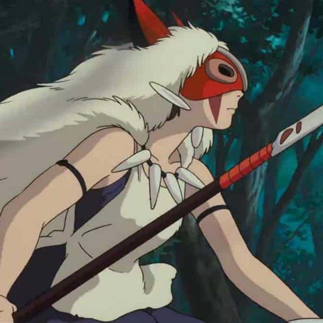 |
| Mis vecinos Los Yamada | 1999 | 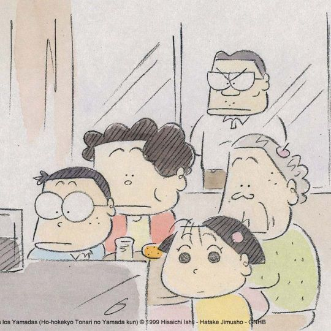 |
| El viaje de Chihiro | 2001 | 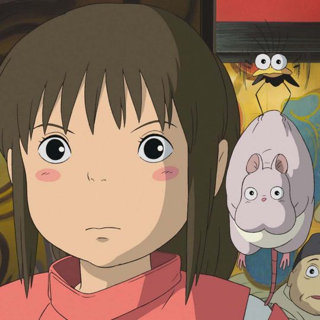 |
| Haru en el reino de los gatos | 2002 | 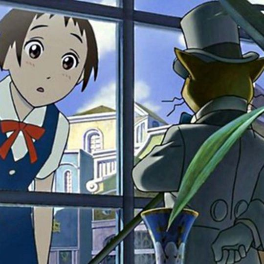 |
| El castillo Ambulante | 2004 | 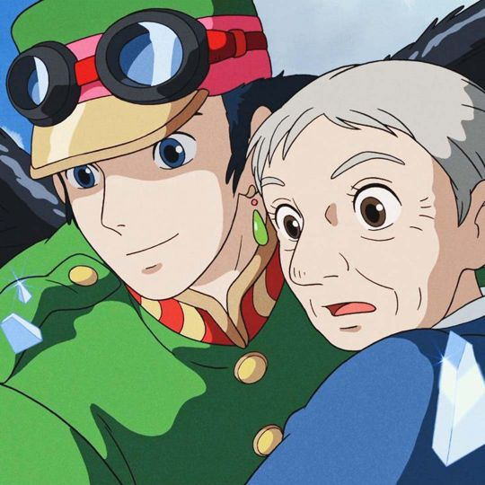 |
| Cuentos de Terramar | 2006 | 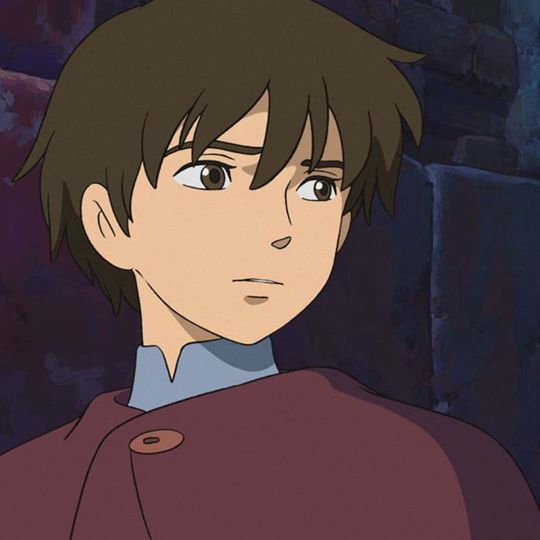 |
| Ponyo en el acantilado | 2008 | 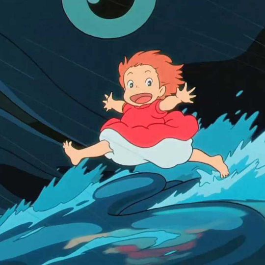 |
| Arrietty y el Mundo de los Diminutos | 2010 | 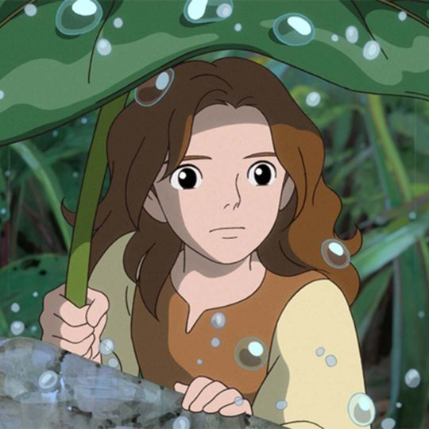 |
| La colina de las amapolas | 2011 | 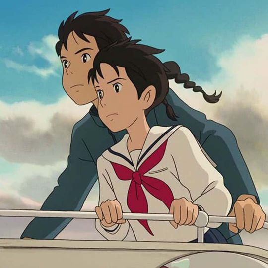 |
| El viento se levanta | 2013 | 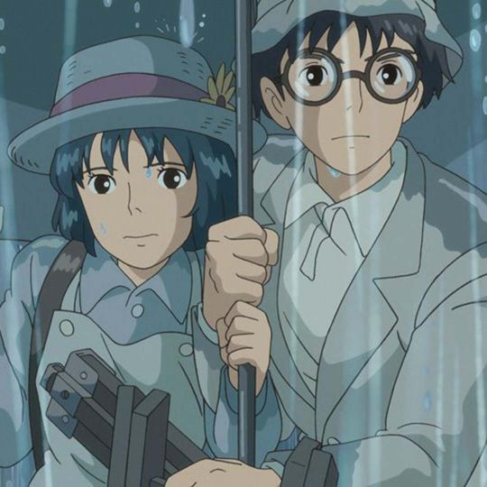 |
| El cuento de la Princesa Kaguya | 2013 | 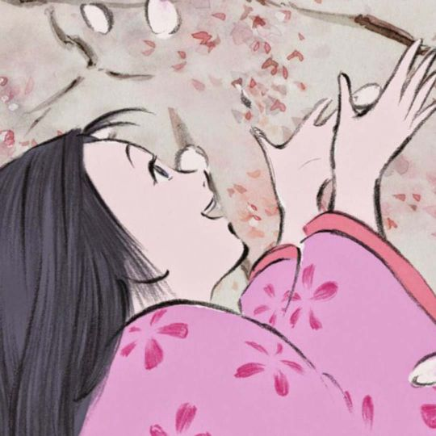 |
| El recuerdo de Marnie | 2014 | 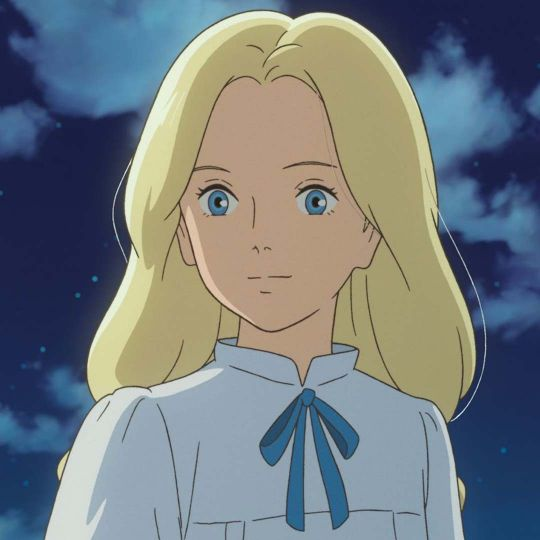 |
| Earwing y la bruja | 2020 | 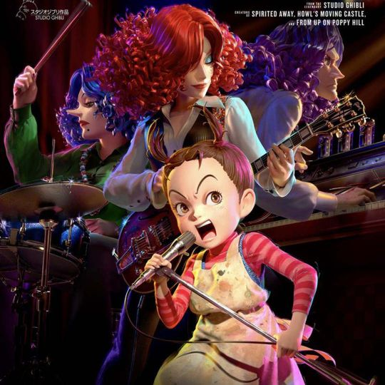 |
| ¿Cómo vives? | 2023 | 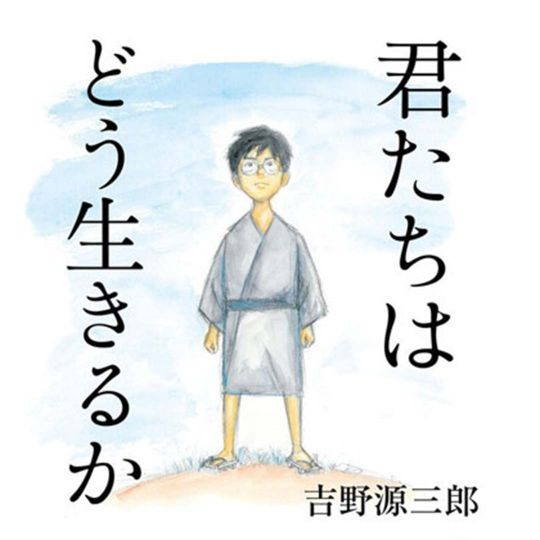 |
Arte
Studio Ghibli se caracteriza por sus hermosas e imaginativas películas animadas, así como por su estilo visual único, sobre todo que tenemos en mente personajes de mujeres que son heroínas, el pasto y cielo hermoso, así como sus personajes imaginarios. El estudio es conocido por crear fondos exuberantes y detallados.